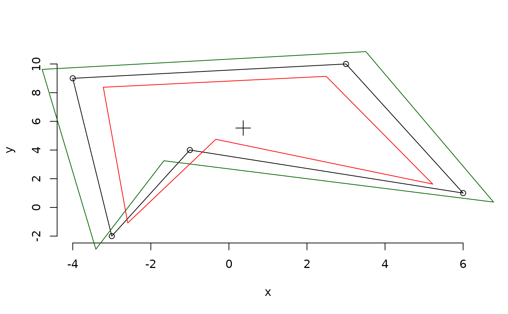

Geometry functions for irregular polygons.
Usage
PolygonArea(x, y = NULL, positive = TRUE)
PolygonCentre(x, y = NULL)
PolygonCenter(x, y = NULL)
GrowPolygon(x, y = NULL, buffer = 0)Arguments
- x, y
Vectors containing the coordinates of the vertices of the polygon.
- positive
If vertices are specified in an anticlockwise direction, the polygon will be treated as a hole, with a negative area, unless
positiveis set to TRUE. Vertices specified in a clockwise sequence always yield a positive area.- buffer
Numeric specifying distance by which to grow polygon.
Value
PolygonArea() returns the area of the specified polygon.
PolygonCentre() returns a single-row matrix containing the
x and y coordinates of the geometric centre of the polygon.
GrowPolygon() returns coordinates of the vertices of polygon
after moving each vertex buffer away from the polygon's centre.
Functions
PolygonArea(): Calculate the area of an irregular polygonPolygonCentre(): Locate the centre of a polygonGrowPolygon(): Enlarge a polygon in all directions
Examples
x <- c(-3, -1, 6, 3, -4)
y <- c(-2, 4, 1, 10, 9)
plot(x, y, frame.plot = FALSE)
polygon(x, y)
PolygonArea(x, y)
#> [1] 60
points(PolygonCentre(x, y), pch = 3, cex = 2)
polygon(GrowPolygon(x, y, 1), border = "darkgreen",
xpd = NA # Allow drawing beyond plot border
)
# Negative values shrink the polygon
polygon(GrowPolygon(x, y, -1), border = "red")
